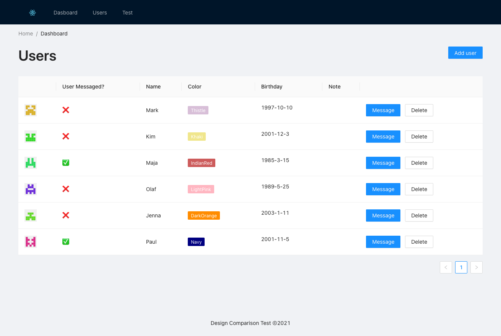
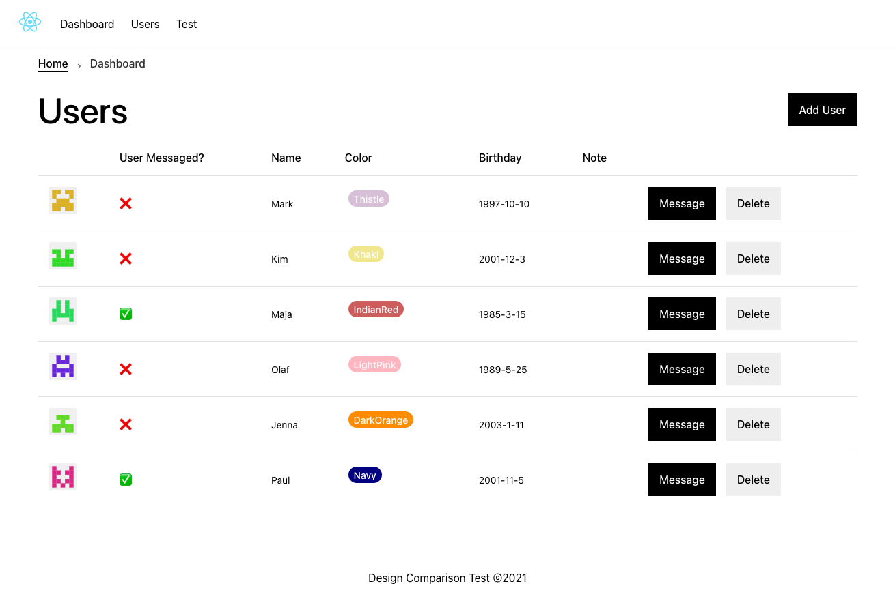
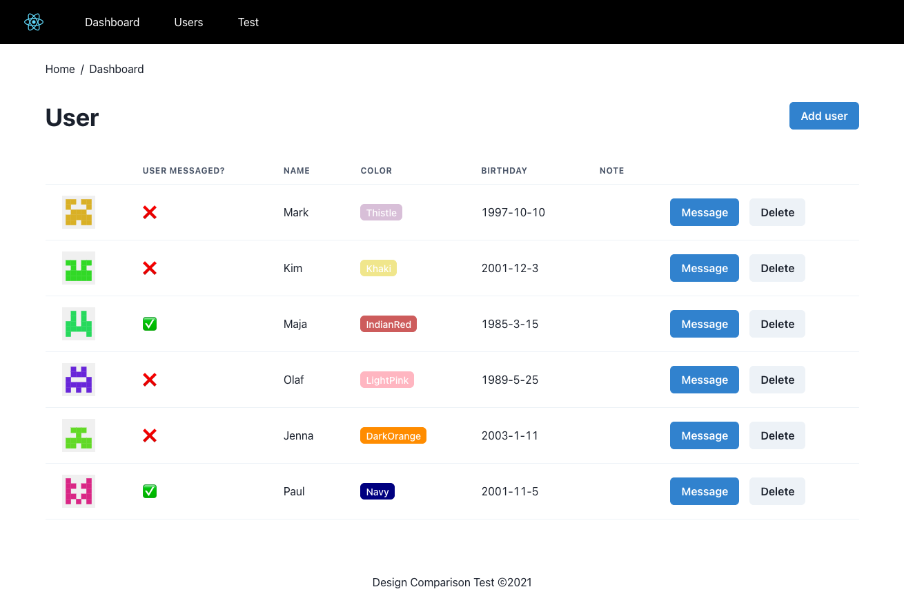

A small comparison between Antd, Base-Web and Chakra-UI
1. Intro
I had great success using Antd for small personal projects but always wondered how it would stack up when compared to other UI frameworks for React. As I have only previously worked with Material UI for Angular and Bootstrap for plain HTML, my exposure to UI frameworks for React was pretty much limited to Antd.
I like Antd. It's well designd, has a rich feature set and provides simple API. What does the competition look like? I had no idea, so I decided to do a small comparision between Antd and other UI frameworks.
Besides the provided API, breath of prebuild components and features, the actual file size of the deployed site was something I was also curious about.
2. Example site
To get a feel for the handling and feature-set I build the same page three times. The site includes a navigation with a logo, breadcrumbs, a headline, a table with an identicon avatar, a tag element showing colors and multiple buttons.
3. Frameworks
While looking for opinions on customizing Antd I stumbled upon reports of people switching to Base-Web and Chakra-UI (for various reasons). Both of which feature a style I was actually looking to create within Antd.
I shortly considered adding Bootstrap into this comparision as I had experience with it, but ultimately decided against it because I wanted to learn something new and disliked the look.
If I expand this comparision in the future I'd like to include MaterialUI (the React one, not the similiarly named Angular Material UI) as it offers a slick looking design. Another candidate would be IBM Carbon Design. It looks complicated to use but the design is too striking to pass up.
4. Pages
4.1. Antd
 Implementing the example in Antd was easy. Afterall, it's what I am familiar with the most. Of the three it had the most concise syntax for this small site. As a result I built it the fastest. It also had all the components that I need, though this could be the result of starting with a Antd design in my head and working it backwards to an example site. Something that I noticed while building the site with the other two frameworks, is that I rarely had to adjust spacing, which I like. This could be because of my inexperience in possible grid/layout systems with the other two frameworks though. What I dislike about Antd and what made me do this comparison, is that Antd's design is very flavorfull. Sure, it is possible to change the highlight color from blue to lets say, green, but UI elements come with a non-minimal style that makes your own components more likely to stand out. This is also what drew me to the other two frameworks, as they're both very minimalistic.
You can check out the site here: antd-page
The code for the page can be found here: github
4.2. Base-Web

I enjoyed using Base-Web. It's Syntax differens from Antd in two ways. First, it's docs uses Styletron to add CSS and override Styles. This however is entirely optional. Second, instead of overloading one component with all the possible features, Base-web rather offers multiple different versions of that component. I prefer the Antd way, as leads to less code. That's als my only complaint with Base-Web. Some features feel like they require a lot more code than you'd expect.
The designs of the components is something I prefer over Antd. It's my favorite of the three actually. The tall typography and square elements give it a modern look. Lastly, the docs offer a component builder which allows to click together options and to copy the code, instead of having to write it yourself. I didn't use it because I didn't require the full feature-set of the framework, but it's a nice addition.
You can check out the site here: base-page
The code for the page can be found here: github
4.3. Chakra-UI

At first the minimal offering for layouts in Chakra annoyed, but I surprisingly little CSS was needed to make it all work. Unsurprisingly, I needed the most lines of CSS with Chakra (Antd: 20, Base: 40, Chakra: 61). But as I didn't make it my goal to optimize for CSS, I am sure that all those numbers can be cut down. Chakra is mostly concise but doesn't have the huge feature list that the other two offer (at least in the standard version). For instance: I needed to build the table myself, instead of passing my column definition and data to a component. Like Base-Web, Chakra is very minimalistic. The components are simpler to use, which makes it easier to change things.
You can check out the site here: chakra-page
The code for the page can be found here: github
5. Sizes and load times
To get a ballpark number I deployed all three sites to github using gh-pages. It's an easy process that I often use to get something I can share quickly. I did not tweak anything with the build. Using the Firefox Performance analysis tool in the Developer Tools I got the following numbers:
| JS | Images | HTML | CSS | Total Size | |
| Antd | 603.42 | 11.57 | 3.09 | 512.26 | 1133.35 |
| Base | 326.38 | 11.57 | 3.02 | 3.02 | 341.76 |
| Chakra | 330.85 | 11.57 | 3.04 | 1.01 | 346.47 |
| create-react-app | 129.17 | 11.57 | 3.09 | 0 | 143.83 |
| JS | Images | HTML | CSS | Total Size | |
| Antd | 191.18 | 67.76 | 12.4 | 2.21 | 273.56 |
| Base | 89.19 | 12.4 | 2.2 | 1.18 | 104.97 |
| Chakra | 103.96 | 12.4 | 2.2 | 1.26 | 119.82 |
| create-react-app | 43.15 | 10.64 | 1.85 | 0 | 55.64 |
Load times where also shown by Firefox but the numbers scattered a lot (e.g 0.23s - 0.66s) on all pages, making me think I am just comparing Githubs CDN. Bottom line is: All pages loaded fast, even with caching disabled.
To add further perspective I also deployed the "create-react-app" output. It's not a perfect comparison as it has none of the elements (table, identicons, etc.) but it took no time to do, so I added it.
Antd being at least twice as big as either one of the others was surprising. The fact that both Base-Web and Chakra-UI are so close to each other makes me think there is some optimisation left on the table in the default build process for Antd. Now I did use more components in Antd, as I not only used buttons and tags, but also the layout element in the app component. That's why I needed less CSS. Does that justify an almost doubling in JS file size? I don't think so.
I am fine with Antds bigger size as it comes with everything you'd ever want. Although the difference is small, Base-Web being the smallest size is impressive as it also delivers a big list of features. Way more than Chakra it seems.
6. Conclusion
While I didn't find a better API, with Base-Web I found a Framework that is both easy to use and ships with a design that I prefer. As such I'm going to use it for my next project and see how it behaves in something that isn't just a table. I'll continue to use Antd where I'm neither concerned with a minimal look nor the smallest possible file size. The API is still wonderful and the feature set is at the top. It would be interesting to see how big the example page is, if written from scratch. And to see how this would change for bigger Projects.
For my small scale projects the benefits of Base-Web heavily outweigh the small footprint in file size that is attached to it.